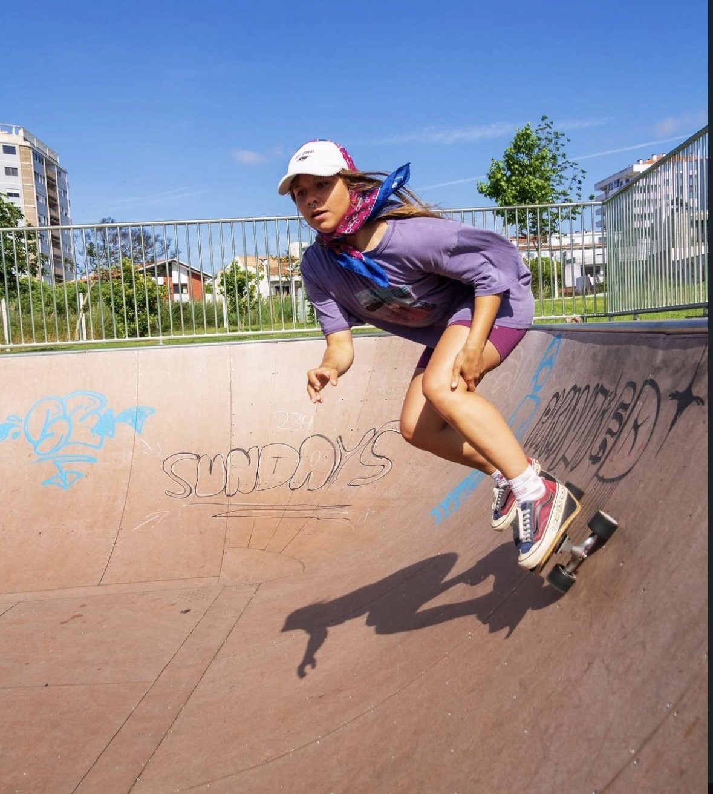
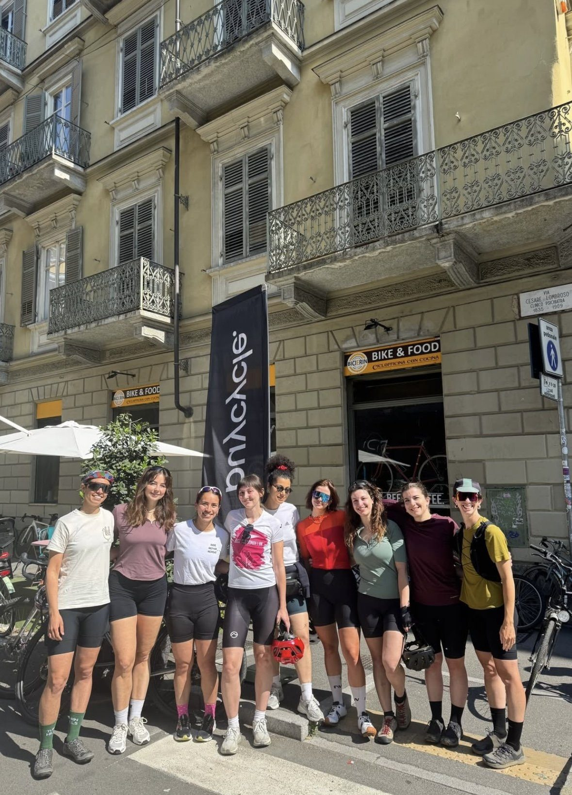

climbing festival
Two days at the climbing festival in Valle dell'Orco — climbing together, meeting the wider community, and making space for women new to the rock.
Climbing

Porto · Turin · Trondheim · Cagliari
A women-led community connecting women through sport, movement and nature — and backing any woman who wants to lead something of her own.
What we are
Asterisco* is a women-led community and umbrella organization that connects women through sport, movement and nature.
We create open, low-pressure spaces where women try new sports, spend time outdoors and meet each other — beginners very much included.
And when a woman has an idea for an event of her own, we help her make it happen and put her in the lead.
Two sides of the same thing
Confidence, autonomy, connection, and a sense of ownership over your own body and choices. We treat them as one process, not two separate programmes.

Have an idea for an event? Bring it to us. We help you find partners, a venue and the practical pieces — you decide, you organise, you lead. For many women it is a first real experience of being in charge.

Come try a sport for the first time, alongside other women doing exactly the same. No experience needed, nobody keeping score. Every event also makes room for a real conversation.

Women learning from women
Our events are built around a woman who already knows something — how to fix a bike, how to climb, how to think about food and movement — sharing it directly with everyone else.
It isn't “come learn from us.” It's “come learn from each other, with us alongside you.”
Where we are
Each city runs its own events, led by women who live there. Between events, local groups keep going on their own — proposing hikes, rides and runs without waiting for us.
Every city has its own group chat inside our WhatsApp community. Join it and find yours.

Nature & reflection
Time outside gives freedom of movement, a shared sense of discovery, and space away from performance pressure and everyday expectations.
We also draw a deliberate parallel: the way women's bodies are subject to control and judgment, and the way the natural world is subject to exploitation. Reconnecting the two, through movement and shared experience, is a source of care and resilience for both.
What's coming up
Two days at the climbing festival in Valle dell'Orco — climbing together, meeting the wider community, and making space for women new to the rock.

A series of rides growing out of our bike repair workshop — built so that riding out, alone or together, stops feeling out of reach.

Back to the wall where it started, for another first-timers' session. Never climbed before? That's exactly who this is for.
Stories & inspiration

What happens when you stop counting calories and start asking what your body actually needs to move.

Twenty women, one bouldering wall, and the barrier that turned out to be smallest of all.

The gender gap in outdoor leadership, and what it actually takes to go from taking part to being in charge.
Three ways in
Whether you want to show up, take the lead, or help make it all possible — there's a door for you.
Come to an event, meet people, try something you've never done. No experience, no equipment and no fitness level required.
Your idea. Your event. We back you up — partners, venue and the organising around it, while you stay in the lead.
Sponsors, clubs, venues and organizations who want more women active, outdoors and leading — we'd like to hear from you.